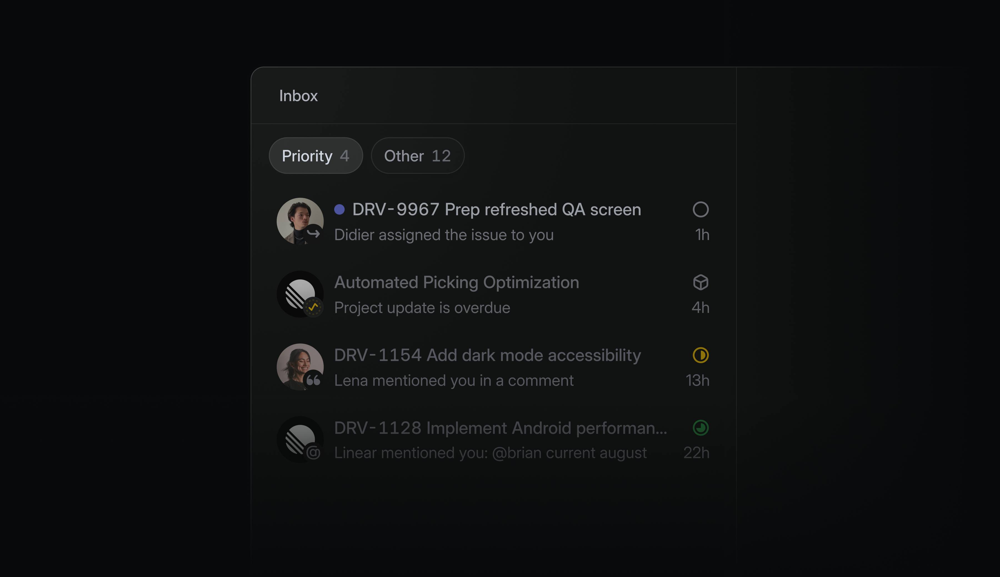
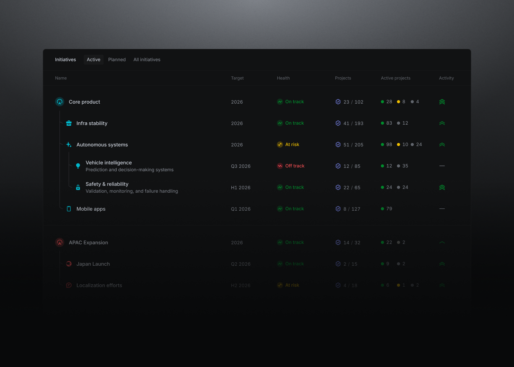
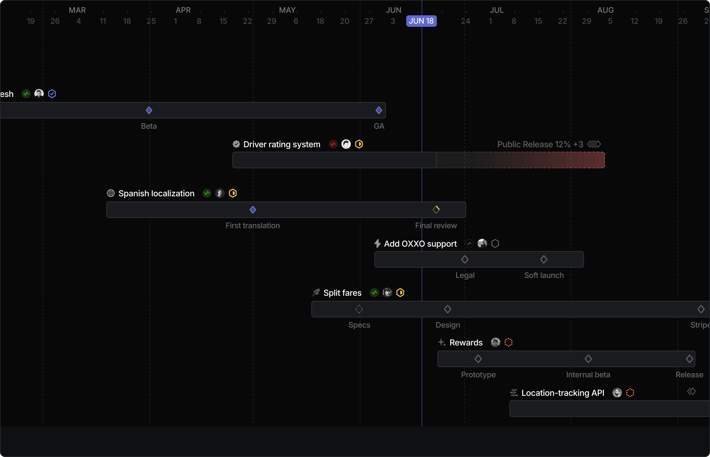
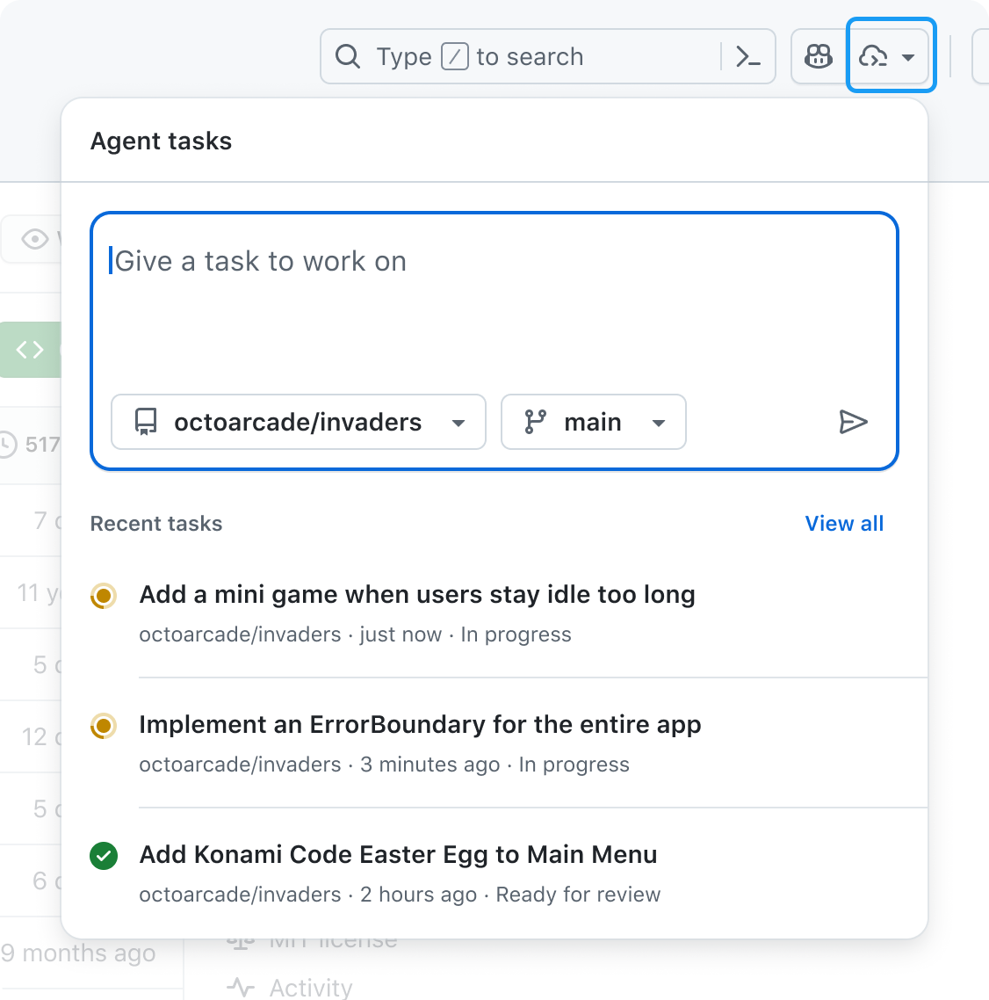
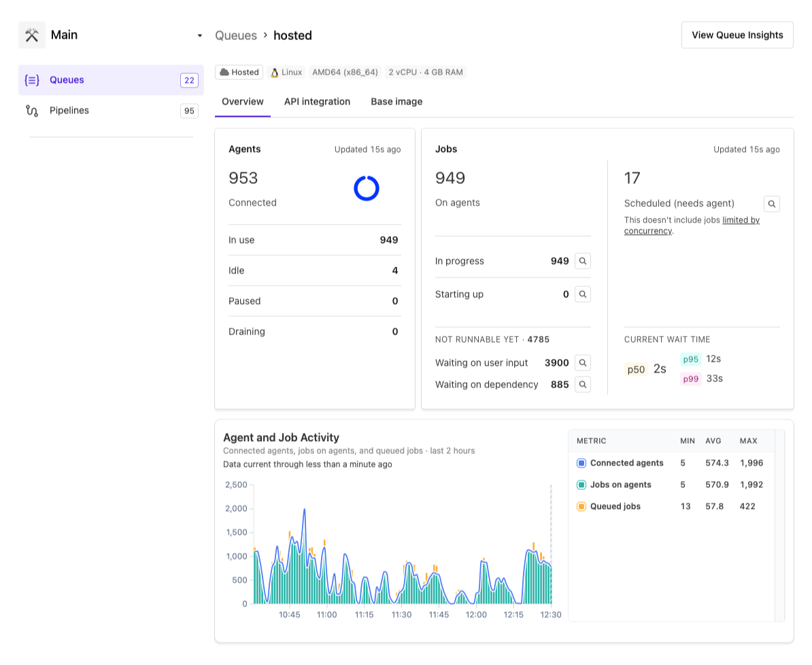

Linear · Project overview
Look at: The quiet milestone rows at the bottom, with counts beside the checkpoint.
Take: A small, inspectable progress summary.
Leave: The long project description and extensive properties do not belong above our actions.
Real product examples, what to borrow, and how they change the next Work design. Your feedback sets the direction; these references help us make it readable.
Understated milestone progress. A compact execution summary. The action stack gets the emphasis.
Look at: The quiet milestone rows at the bottom, with counts beside the checkpoint.
Take: A small, inspectable progress summary.
Leave: The long project description and extensive properties do not belong above our actions.

Look at: Consistent title/context rows and a visible attention count.
Take: A focused stack you can work through one item at a time.
Leave: Read or dismissed notifications are not resolved product decisions.
Milestone progress is context, not a hero. Design review becomes a normal review item in Needs you. Remove Next up entirely.
Resolving an action returns to the same stack, with an explicit next-item link. Counts describe unresolved work, not unread messages.
Show what level I am reading, what contributes to the milestone, and where to go next.

Look at: Separate Name, Target, Health and Projects columns; hierarchy has visible guides.
Take: Aligned, comparable fields and one clear planning scale.
Leave: All levels expanded at once would recreate our muddy tree.

Look at: Named checkpoints on workstream bars; the time axis explains position.
Take: A separate high-level sequencing view with drill-down.
Leave: Dates and a complete scheduling model cannot be invented for visual effect.
Choose a milestone. Read its outcomes/features in a table. Open a feature to see tasks, then open a task. Each level has a breadcrumb and one kind of row.
No preselected detail panel at entry. Keep Dependencies as a separate projection over the same scope. A dated timeline can follow when dates are meaningful.
| Alternative | Best for | Disposition |
|---|---|---|
| Milestone-scoped table | Purpose, progress and drill-down without dates | Recommended experiment |
| Workstream timeline | Overlap, deadlines and scheduled commitments | Secondary; compare a small example |
| Full nested outline + pane | Seeing several hierarchy levels simultaneously | Drop as the default |
GitHub Projects demonstrates saved projections over shared work. Roadmap configuration supports scope and date controls. Our captured image below is only a toolbar crop, not a complete screen reference.
Small resource dashboard above a simple vertical stack of durable work-item cards. Review-ready first; Done hidden.

Look at: Title, recency and literal In progress / Ready for review states on each task.
Take: Recognizable work objects and direct review destinations.
Leave: The large prompt composer and chronological order. Our owner wants review-first.

Look at: Agents and jobs are separate; waiting-on-capacity differs from blocked work.
Take: Agent/queue vitals, exact blocker categories, last-updated information.
Leave: The large operational charts and fleet-level detail.
Every card has a title, explicit status, one useful sentence, age and its next action. Add the assigned agent only when relevant. Attempts sit inside the work item.
Use labels and icons as well as restrained color. Review-ready uses a review symbol; reserve the completed checkmark for Done.
Header vitals: active/connected agents, eligible queue, healthy/connected servers, spend policy and freshness. Server count and execution-slot count remain distinct.
Problems sit immediately after reviews so failed or paused work is visible. Stable ordering prevents a focused card moving while you act.
GitHub mission control connects task context, activity and changed files. Jules Repo view documents scoped task history and reopening work for feedback; it is a behavior reference only because the inspected page supplies no useful screenshot.
Inspect GitHub’s task/session example →Our recommendations from the study, not additional approved product scope.
Keep the saved result visible and offer the next action. Reading an item cannot clear its decision or review obligation.
A milestone or queue count opens precisely the records it summarizes. Exclude blocked and unauthorized tasks from the runnable queue.
“Working for 8 minutes” differs from “no update for 8 minutes.” Represent missing telemetry explicitly.
Display amount, period, scope and whether the limit is enforced, alert-only or unavailable. Policy forbidding new spend is not proof of a provider hard cap.
A completed-item count and open-gate count are more useful than an opaque percentage. A shared task must not be counted twice.
A review card opens the actual preview and checks. Agent finished, owner accepted and released stay separate.
Next experiment: a small Plan comparison using the same milestone content, plus Overview’s quieter summary and Operations’ five-state card stack. Intake keeps its existing direction.
{kind=link}
{kind=link}
{kind=link}
{kind=link}
{kind=link}